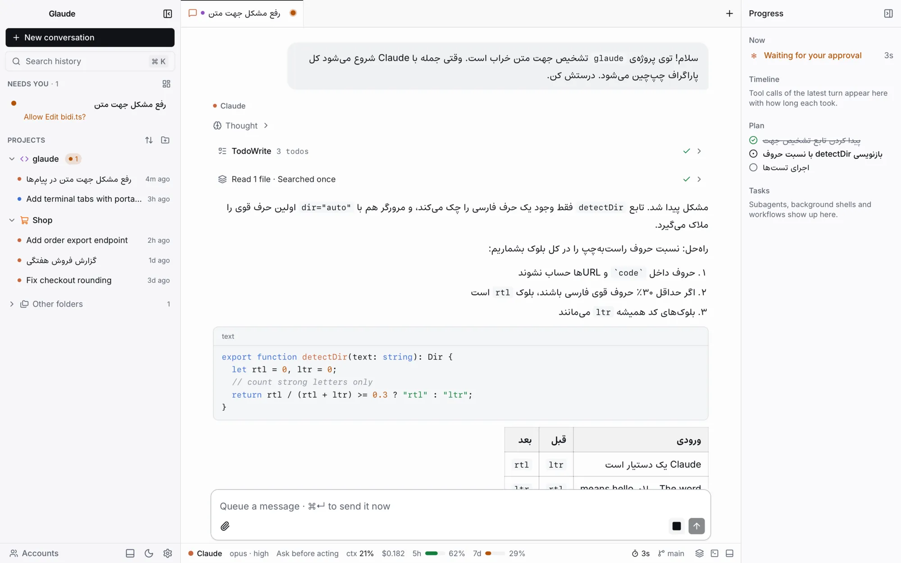
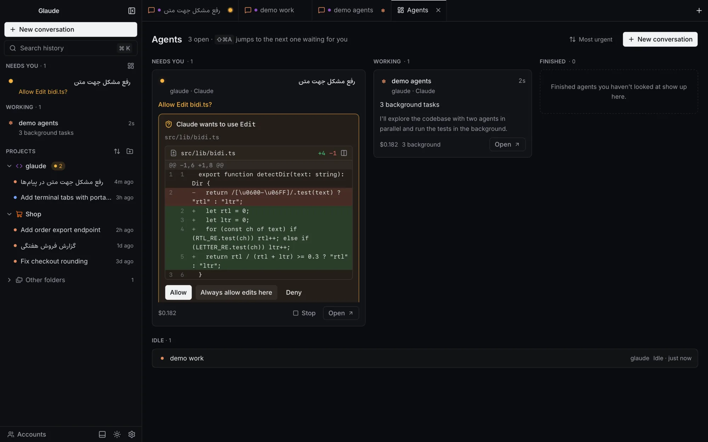
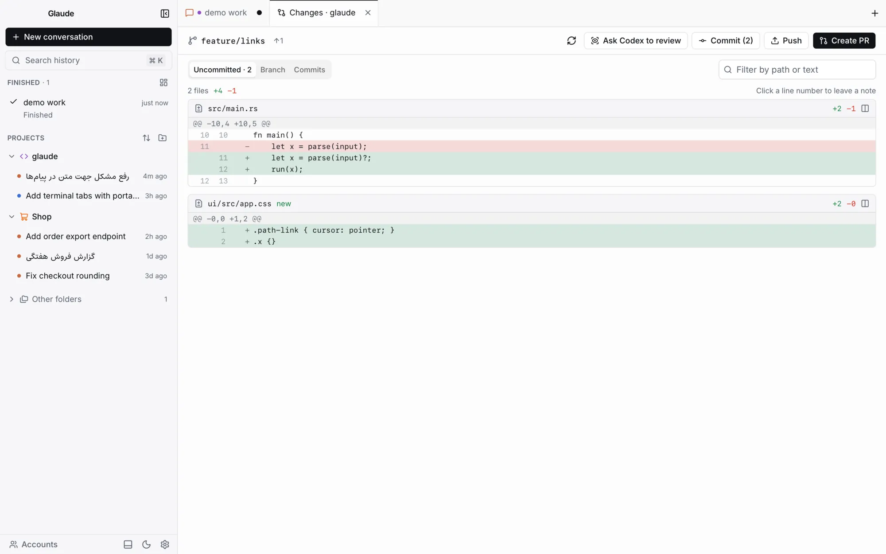
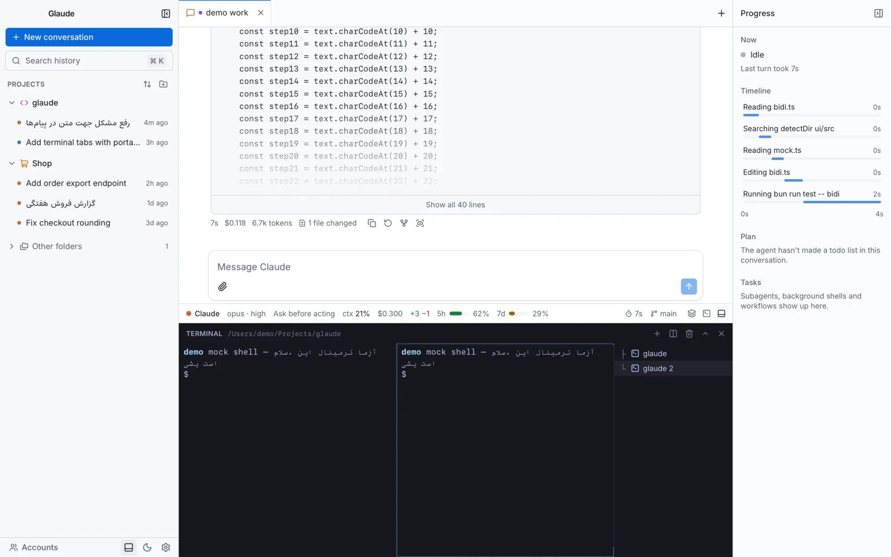
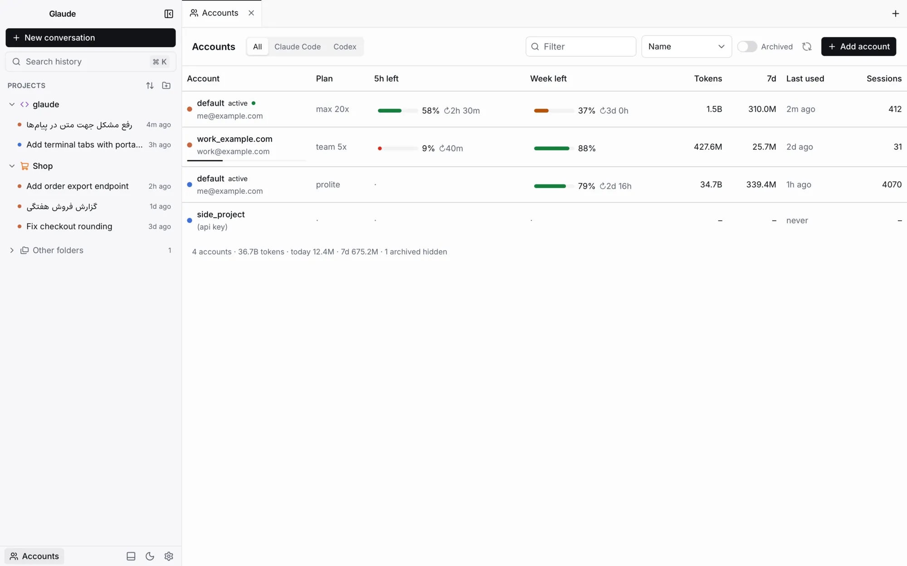
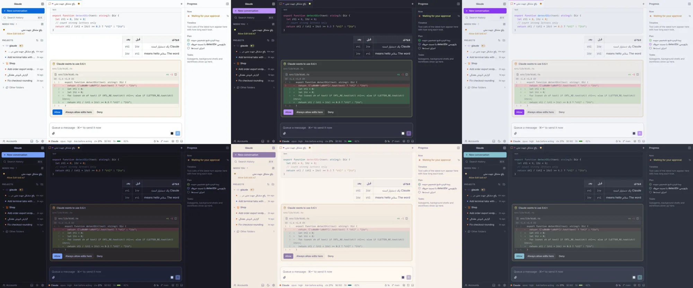

Claude Code and Codex
Both CLIs side by side: streaming replies, thinking, tool calls, plans, subagents and workflows.
Run your agents side by side, approve their edits in place, review what they changed, and read Persian the right way round. Glaude drives the CLIs already installed and signed in on your computer. No API key, no extra login.
Free and open source under Apache-2.0 · macOS, Windows and Linux

Persian & right-to-left
Terminals have no bidi support, so Persian comes out reversed and lines that mix Persian and English jump around. Glaude gives every paragraph, list and table cell its own direction, keeps code left to right, isolates Latin words inside Persian sentences, and sets Persian in Estedad.
سلام! تشخیص جهت متن خراب است. وقتی جمله با Claude شروع میشود کل پاراگراف چپچین میشود.
۱. حروف داخل code و URLها حساب نشوند
سلام! تشخیص جهت متن خراب است. وقتی جمله با Claude شروع میشود کل پاراگراف چپچین میشود.
۱. حروف داخل code و URLها حساب نشوند
Features
Glaude is a full workspace for Claude Code and Codex: conversations, approvals, changes, terminals and accounts, without leaving the app.
Both CLIs side by side: streaming replies, thinking, tool calls, plans, subagents and workflows.
A background host owns the agents. Close the window and running turns, queues and scheduled resumes go on.
Permission cards with the diff, right in the conversation. Allow once, always, or deny with a note.
Up to eight panes, each with its own tabs. Drag a tab to an edge to split, and see at a glance who needs you.
A bottom panel like VS Code: tabs, splits, resize and maximize, plus each CLI's own terminal UI.
Review uncommitted work or the whole branch, leave notes on lines, commit, push and open a pull request.
Start a conversation on its own branch in a new git worktree, with setup, cleanup and actions from .glaude.json.
Many Claude and Codex accounts with plans, 5-hour and weekly limits, token usage, and resume when a limit resets.
Group conversations into projects with a colour, several folders and their own defaults for new chats.
Full-text search over every past prompt and reply of both tools, ranked by how often you open them.
Saved HTTP and SOCKS proxies for the app, an account, a project or one conversation, with a Check button.
Every action, open agent and saved prompt one shortcut away, with prompts that ask for their own blanks.
Also: cross-review by the other tool, side chats, rewind and fork, usage and cost per project, desktop notifications, a menu-bar status item, and saved prompts.
Agents board
See which agents need you, which are working and which have finished, and answer approvals and questions without opening each tab. One shortcut jumps to the next agent that is waiting.

Changes
Uncommitted changes, the branch against its base, or a single commit. Filter by path, leave notes on lines and send them back as a review, then commit, push and create the pull request.

Terminal
Shells in the conversation's folder, side by side, in a panel that stays put while you switch tabs. Give it its own theme: a dark terminal under a light window works fine.

Accounts
Claude and Codex accounts with their plans, what is left of the 5-hour and weekly limits, and tokens used. Add one with the tool's own login; pick the account for each conversation.

Themes
About 25 light and dark themes colour the window, the code and the terminal: GitHub, One, Solarized, Dracula, Tokyo Night, Nord, Catppuccin, Rosé Pine, Gruvbox, Everforest and Glaude's own. Pick any accent, give chats and terminals their own theme, or import one from VS Code, iTerm2, Ghostty, kitty or Windows Terminal.

Privacy
Glaude starts the claude and codex CLIs you already use, with their own sign-in. It warns you if a session would bill an API key instead.
Glaude never reads your keychain or tokens. The CLIs handle their own authentication; Glaude only shows what they report.
Everything runs on your machine; there is no Glaude server. The source is on GitHub under Apache-2.0, so you can check it yourself.
Download
Install the claude and/or codex CLI and sign in once. Glaude finds them on your PATH.
Universal (Apple silicon and Intel) · macOS 11 or later
Download .dmgThe app isn't notarized yet. On first launch, open System Settings → Privacy & Security and choose Open Anyway.
64-bit · Windows 10 or later
Download installerAlso as .msi
64-bit · WebKitGTK 4.1
Download AppImageAll files and SHA-256 checksums are on the releases page.
FAQ
No. Glaude is an independent open-source project. It runs the official Claude Code and Codex command-line tools on your computer.
No. Glaude uses the CLIs as they are already set up and signed in, so your existing Claude or ChatGPT subscription applies.
No. Glaude works in any language; it is simply the first desktop app for these tools that gets right-to-left text right, for Persian, Arabic, Hebrew and Urdu alike.
On your computer. Conversations are the CLIs' own transcripts; Glaude keeps its settings and a search index locally and has no server.
Yes. Add each with the tool's own login, see their limits side by side, and choose the account per conversation or per project.
Open an issue on GitHub. Security problems go through the private report described in SECURITY.md.